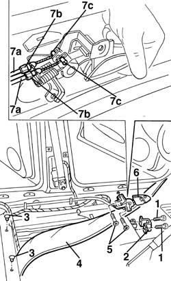

7015B48 Tailgate OPENING CONTROL - R.R.
- Path
- Procedures > 70 FITTINGS > 7015 TAILGATE/ > 7015B tailgate locking/opening devices > 7015B48 Tailgate OPENING CONTROL - R.R.
- Kind
- repair procedure (removal / refitting; the operation number is the code)
- Applies to
- all engines; all production periods
- Interactive page
- https://sloeber94.github.io/elrnDB-a156/en/#/3238716
Applies to: all engines; all production periods; only with equipment: Station Wagon
 Removing
Removing
 Refitting
Refitting7040L40 front compartment scuff strip - r r (left side)
- 7040L44 rear compartment scuff strip - r r (left side)
7040H36 central trim lower element - r r (left side)
7050A22 rear seat cushion - r+r (left side)
7045A10 l/h or r/h front seat (one) - r+r (left side)
5010C44 air diffuser to rear seat - r+r (left side)
1. Undo the inertia switch protection bolts.
2. Remove the inertia switch protection.
3. Remove the two floor carpet retaining buttons.
4. Lift up the floor carpet along the left side of the vehicle.
5. Undo the bolts fixing the opening control.
6. Remove the opening control from the carpet.
7. Release the outer casings from the retainers (7a) and the end of the cables (7b) from the attachments.
Recover the opening control.

Applies to: all engines; all production periods; only with equipment: Station Wagon
Refitting
RemovingCheck that the opening control is not damaged.
Connect the control cables to the attachment and the outer casings to the retainers.
Fit the opening control in the opening in the carpet and place it in position.
Tighten the bolts fixing the opening control.
Place the floor carpet back in position, along the left side of the vehicle.
Fit the two floor carpet retaining buttons.
Refit the inertia switch protection and secure with bolts.
5010C44 air diffuser to rear seat - r+r (left side)
7045A10 l/h or r/h front seat (one) - r+r (left side)
7050A22 rear seat cushion - r+r (left side)
7040H36 central trim lower element - r r (left side)
- 7040L44 rear compartment scuff strip - r r (left side)
7040L40 front compartment scuff strip - r r (left side)
Topics linked from this page (5)
- 5010C44 air diffuser to rear seat - r+r
- 7040H36 central trim lower element - r r
- 7040L40 front compartment scuff strip - r r
- 7045A10 l/h or r/h front seat (one) - r+r
- 7050A22 rear seat cushion - r+r